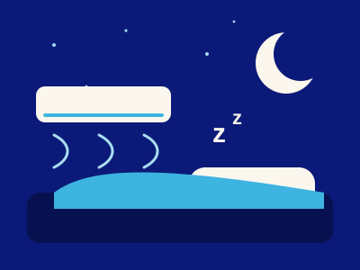
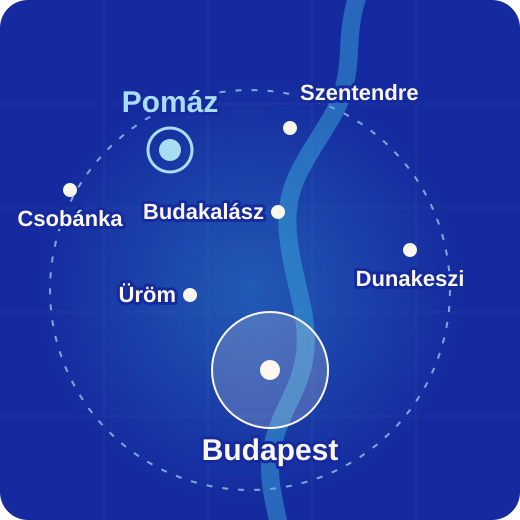
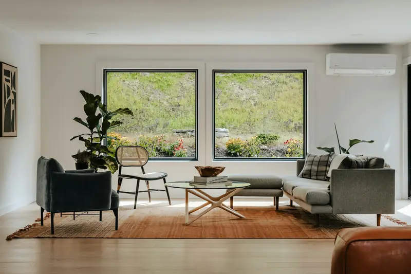
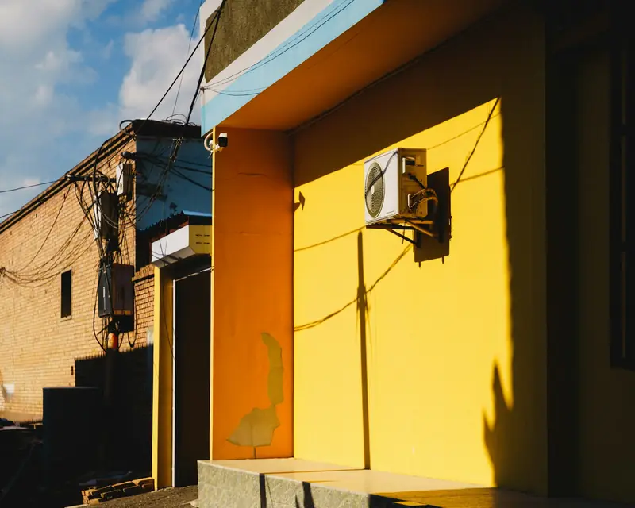
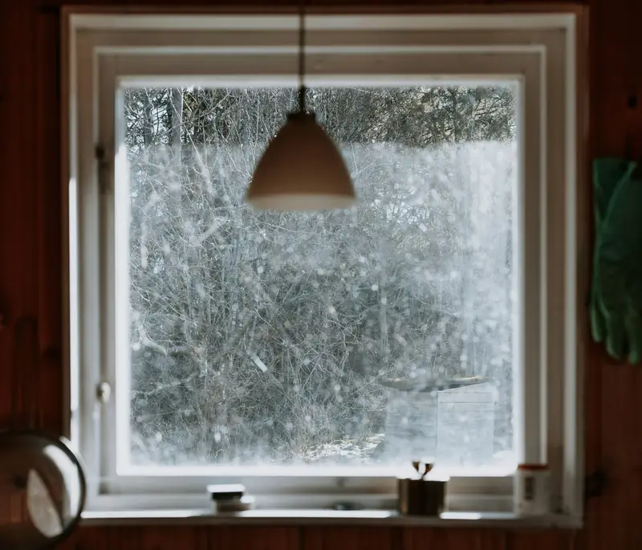
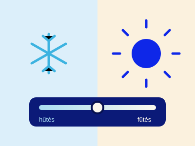
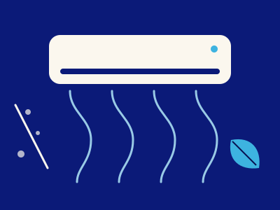

Végre kialszod magad
Az alváskutatók szerint a hálószoba ideális hőmérséklete 18–20 °C körül van. 28 fokban forgolódsz, másnap fáradt vagy. Egy csendes inverteres klíma egész éjjel tartja a hőfokot.
Klímaszerelés Budapesten és Pomáz környékén
Klíma beszerzése, felszerelése, tisztítása és fertőtlenítése, javítása és szivárgáskeresés – egy kézből, korrekt áron, pontos határidővel.
Szolgáltatások
A választástól a beszerelésen át az éves karbantartásig, H tarifa kiépítéssel, – nem kell három különböző embert hívnod.
Segítek kiválasztani és beszerzem a lakásodhoz illő klímát.Segítek kiválasztani a lakásodhoz illő teljesítményű, megbízható inverteres készüléket, és beszerzem neked.
Felmérés, egyeztetett időpont, beüzemelés és betanítás.Előzetes felmérés, egyeztetett időpont, tiszta munka. A telepítés után beüzemelem a klímát, és megmutatom, hogyan használd a leggazdaságosabban.
Kevesebb áram, csendesebb működés, hosszabb élettartam.A beltéri és kültéri egység alapos, vegyszeres tisztítása. A tiszta klíma kevesebb áramot fogyaszt, csendesebb és az élettartama megnő.
Penész, baktériumok és kellemetlen szag ellen.Penész, baktériumok és kellemetlen szag ellen. Különösen ajánlott allergiásoknak, kisgyerekes családoknak szezonkezdés előtt.
Nem hűt, csöpög, hibakódot ír? Megkeresem a hibát és javítom.Nem hűt, csöpög, hibakódot ír vagy furcsa hangot ad? Gyors hibafeltárás és javítás.
Megtalálom a szivárgást, javítom, majd újratöltöm a rendszert.Ha gyengül a hűtés, gyakran a hűtőközeg szivárog. Megkeresem a hiba pontos helyét, javítom, majd szakszerűen újratöltöm a rendszert.
Terület
Pomázi szerelőként a Dunakanyar és Budapest északi részén dolgozunk Rövid kiszállási idő, helyismeret, és ha baj van, nem napokat kell várnod.
Az első modern klímát 1902-ben Willis Carrier tervezte – de nem embereknek, hanem egy nyomdának, hogy a páratartalom ne hullámosítsa a papírt.

Miért klíma?
A nyarak évről évre melegebbek, a kánikulás napok száma Magyarországon az elmúlt évtizedekben jelentősen nőtt. A klíma ma már nem luxus, hanem a pihenés, a munka és az egészség alapfeltétele – ráadásul télen fűtésre is az egyik legolcsóbb megoldás.




Az alváskutatók szerint a hálószoba ideális hőmérséklete 18–20 °C körül van. 28 fokban forgolódsz, másnap fáradt vagy. Egy csendes inverteres klíma egész éjjel tartja a hőfokot.

A klíma valójában hőszivattyú: 1 kWh áramból 3–5 kWh hőt állít elő, mert a kinti levegőből „gyűjti” a meleget. Átmeneti időszakban és enyhébb teleken így sokszor olcsóbban fűt, mint a gázkazán.

A klíma nemcsak hűt, hanem párátlanít és szűr is: egy nyári napon akár több liter vizet von ki a levegőből, a szűrő pedig felfogja a por és a pollen egy részét.
Még gondolkodsz? Kérj egy kötelezettségmentes felmérést – megmondom, megéri-e nálad.
Árak
Tájékoztató árak. A pontos összeget a helyszíni felmérés után, írásban kapod meg – és ahhoz tartom magam.
19 900 Ft / egység
Legnépszerűbb
79 900 Ft-tól
299 000 Ft-tól
| Szolgáltatás | Ár |
|---|---|
| Fertőtlenítés (tisztítás mellé) | 9 900 Ft / egység |
| Fertőtlenítés önállóan | 14 900 Ft / egység |
| Hibafeltárás, javítás | 14 900 Ft-tól + alkatrész |
| Szivárgáskeresés | 24 900 Ft-tól |
| Hűtőközeg utántöltés | mennyiség szerint, előre egyeztetve |
| Plusz csővezeték | 9 900 Ft / méter |
| Kiszállás | Pomáz és 15 km-en belül ingyenes, Budapesten 5 000 Ft |
GYIK
Egy átlagos split klíma beszerelése fél napot vesz igénybe. A pontos időt a felméréskor megmondom, és előre egyeztetjük az időpontot.
Társasházban a kültéri egység a közös homlokzatra kerül, ezért általában kell hozzá a társasház (a közös képviselő) hozzájárulása, és egyes településeken, kerületekben a helyi településképi rendelet is előírhat bejelentést. Érdemes ezzel kezdeni.
Legalább évente egyszer, lehetőleg a nyári szezon előtt, ha téli üzemben is használod és sokat megy a klíma, háziállat van a lakásban, vagy allergiás valaki, évente kétszer is szükséges.
Durva ökölszabályként egy kb. 25 m²-es szobához 2,5 kW, egy kb. 35 m²-eshez 3,5 kW körüli klíma való. A tájolás, a szigetelés, az ablakok és a belmagasság viszont sokat számít, ezért a felméréskor kiszámolom, mekkora kell nálad.
A készülékre a gyártói garancia vonatkozik ami lehet akár 7 év is, a szerelésre pedig én vállalok garanciát.
Rólam
Hiszek abban, hogy egy klímaszerelés akkor jó, ha utána egy porszem sem marad a lakásban, a készülék csendben teszi a dolgát, és évekig nem kell rá gondolni. Ezért minden munkát felméréssel kezdek, és csak olyan megoldást ajánlok, amit a saját otthonomba is beszerelnék.
Ajánlatkérés
Elég a neved, a telefonszámod és hogy mire van szükséged – visszahívlak. Sürgős? Hívj nyugodtan: +36 30 385 1475.
Hamarosan visszahívlak a megadott telefonszámon. Ha sürgős, hívj: +36 30 385 1475.